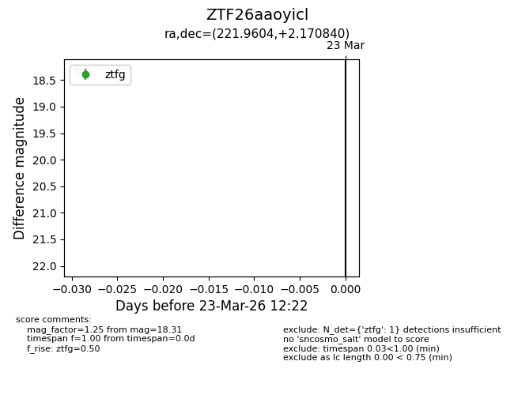
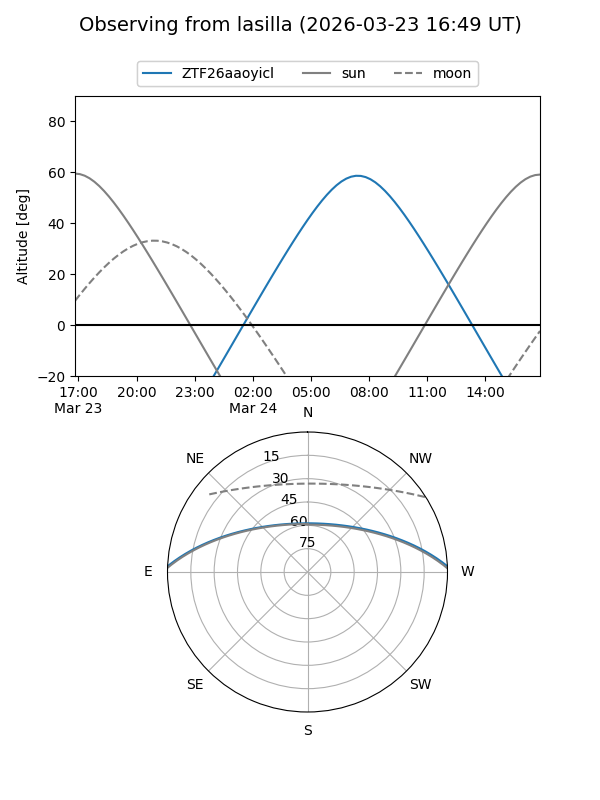
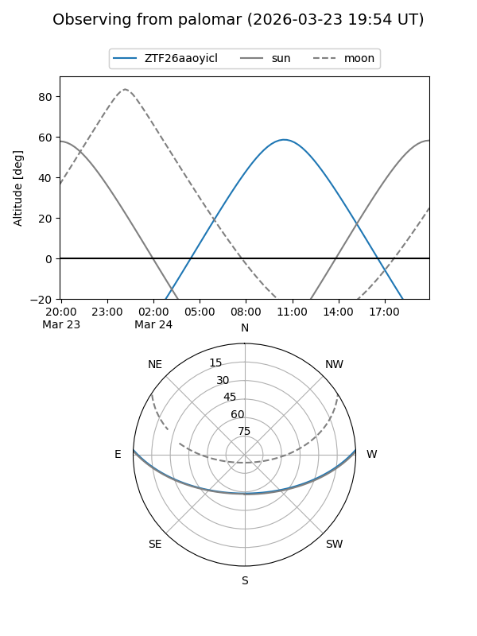

ZTF26aaoyicl
Target ZTF26aaoyicl at 2026-03-23 12:24
Aliases and brokers:
FINK: link
Lasair: link
ALeRCE: link
alt names
ZTF26aaoyicl (ztf,fink_ztf)
Coordinates:
equatorial (ra, dec) = 221.9604,+2.17084
equatorial (HMS+DMS) = 14:47:50.50,+02:10:15.02
galactic (l, b) = (356.0678,+52.59429)
Flags:
Photometry:
last ztfg=18.31
1 ztfg detections
Lightcurve

Visibility


Additional plots